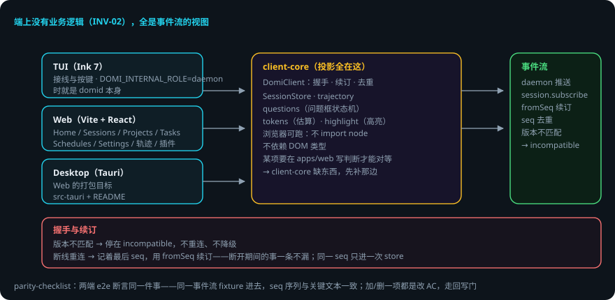

三端
本页回答四个问题：三端怎么连 daemon？共享层做什么？端上有什么坑？出错了会怎样？
apps/tui·apps/web·apps/desktop+packages/client-core。 domi 的端规约一句话：端上没有业务逻辑（INV-02），全是事件流的视图。 贯穿例子：给登录接口加限流——你在 Web 设置页改配置，TUI 里跑任务。
先说结论
- 三端连 daemon 都走
DomiClient这一个类：握手 / 断线重连+断点续订 / 去重三件事，渲染层一件都不用管。 - 断线重连用
session.subscribe的fromSeq续订——断开期间的事一条不漏。 - client-core 能在浏览器里跑（不 import node 模块、不依赖 DOM 类型）。
- 端上没有业务逻辑：如果某项需要在
apps/web里写判断才能对等，那是 client-core 缺东西，先补那边。 - Web 产物 JS gzip 132KB / CSS gzip 6.3KB（阈值 gzip 250KB，还有余量）。
- M5 曾有 Telegram 桥接，2026-10-09 整块移除（见
docs/adr/030-remove-telegram-bridge.md）。
用到的词
| 词 | 意思 |
|---|---|
| DomiClient | 三端共用的协议客户端类。 |
| seq | 事件流里递增的序号。 |
| 续订 | 重连后从 last seq 接着订阅。 |
| 投影 | 把事件流变成视图状态的计算。 |
| 接线处 | 端上把输入接进来、把输出打出去的地方。 |
1. 总体流程

2. 共享层：client-core
三端连 daemon 都走 DomiClient（client-core/src/client.ts）这一个类，它负责三件事（渲染层一件都不用管）：
- 握手：版本不匹配停在
incompatible，不重连、不降级。 - 断线重连 + 断点续订：每个会话记着最后收到的 seq，重连后用
session.subscribe的fromSeq续订，断开期间的事一条不漏。 - 去重：同一个 seq 只进一次 store。
它必须能在浏览器里跑（不 import node 模块、不依赖 DOM 类型）。投影逻辑（SessionStore、trajectory.ts、questions.ts 的问题框状态机、tokens.ts 的 token 估算、highlight.ts 的语法高亮）全在这层——某项如果需要在 apps/web 里写判断才能对等，那是 client-core 缺东西，先补那边（parity-checklist 的判定规则）。
3. TUI（apps/tui，Ink 7）
main.tsx负责接线与按键，不负责业务：组件只认 client-core 的 store。- 同一个可执行文件还有第二个角色：
DOMI_INTERNAL_ROLE=daemon时就是 domid 本身（单二进制里没有别的文件可以跑）。 - 渲染器：默认全屏（终端备用屏）；
tui.renderer: classic或DOMI_TUI_RENDERER=classic回退。首帧前挂过会写~/.domi/state/tui-fallback，之后自动用 classic。 - 已知坑：不要在 React 组件里调 Ink 的
renderToString（reconciler 是单例，嵌套调用在渲染里返回空串、在 effect 里把 yoga 弄崩）；TUI 拿显示行一律走useTranscriptLines（在 setImmediate 里算）。 - 无 TTY 环境验证有限：切片、滚动状态机、滚轮解析、整屏布局有测试，但备用屏进出、真滚轮、Ctrl+O 往返只能在真终端里看。
4. Web（apps/web，Vite + React + Tailwind v4）
- 视图：Home（Composer）/ Sessions / Projects（任务树）/ Tasks / Schedules / Settings（模型、权限、确认模式、用量）/ 轨迹页 / 插件页。
- 设置页写的就是 daemon 启动时读的那份配置；
config.set白名单排除权限 / hooks / MCP / 插件安装（界面不能给自己提权，见配置与厂商）。 - 界面文案走
@domi/i18n：apps/*里不许出现写死的中文（guard:i18n），UI 用tr()。
5. Desktop（apps/desktop，Tauri）
Web 的一个打包目标（端顺序：TUI → Web → Desktop 套壳）。src-tauri + 一个 README。
6. 端之间的一致性
docs/parity-checklist.md 是 TUI ↔ Web 功能对等的判据本身：一项算「对等」，要求两端 e2e 都有用例且都绿，断言的是同一件事——同一份事件流 fixture 进去，两端渲染出来的 seq 序列与关键文本一致。加一项 / 删一项都是改 AC，走回写门。 目前两端 e2e 仍缺（Web 等 Playwright；TUI 有假 stdin 可以直接写）。
7. 出错了怎么办：网断了，任务还在跑
- 断线。DomiClient 重连，
fromSeq续订——断开期间的事件一条不漏，store 去重。 - 版本不匹配。握手停在
incompatible：不重连、不降级。升级对应端。 - TUI 首帧挂掉。写
~/.domi/state/tui-fallback，之后自动用 classic 渲染器。 - Web 设置页改敏感键。白名单拒绝——界面不能给自己提权。改配置文件。
- 两端行为不一致。parity-checklist 判据：先在 client-core 补投影，再修端。
一张表看全部情况
| 情况 | domi 做什么 | 你要做什么 |
|---|---|---|
| 断线 | 重连 + fromSeq 续订 + 去重 | 不用管 |
| 版本不匹配 | 停在 incompatible | 升级对应端 |
| TUI 首帧挂 | 写 tui-fallback，自动用 classic | 不用管 |
| 设置页改敏感键 | 白名单拒绝 | 改配置文件 |
| 端行为不一致 | parity-checklist 判定 | 先补 client-core |
8. 可靠性靠什么
- 连接逻辑单点：三端共用 DomiClient，行为一致。
- 续订不丢事件：断开期间的事件按 seq 补回来。
- 去重：同一个 seq 只进一次 store。
- 业务在共享层：端上没有业务逻辑，对等由 client-core 保证。
- 失败可回退：TUI 渲染器失败自动降 classic。
已知限制
- TUI 无 TTY 环境验证有限：备用屏进出、真滚轮、Ctrl+O 只能在真终端里看。
- 两端 e2e 仍缺（Web 等 Playwright，ADR-013）。
- 版本不匹配不自动升级——要用户动手。
- Telegram 桥接已移除，重做路线见 ADR-030。
代码在哪里
| 主题 | 位置 |
|---|---|
| DomiClient（握手 / 续订 / 去重） | packages/client-core/src/client.ts |
| 投影（store / 轨迹 / 问题框 / tokens） | packages/client-core/src/{store,trajectory,questions,tokens,highlight}.ts |
| TUI 接线 / 渲染 | apps/tui/src/ |
| Web | apps/web/src/ |
| Desktop 壳 | apps/desktop/ |
| 对等判据 | docs/parity-checklist.md |
测试：apps/web/test/*.spec.tsx、apps/tui/test/*.spec.tsx（渲染 / 按键级）、daemon/test/transport.spec.ts（真 WebSocket 推送）。
相关
- 协议客户端细节：Domi Protocol。
- 状态栏六项指标（模型 / token / 花费 / 耗时 / 工具数 / 上下文占用）：
observability/src/report.ts+ client-core 同源格式化。